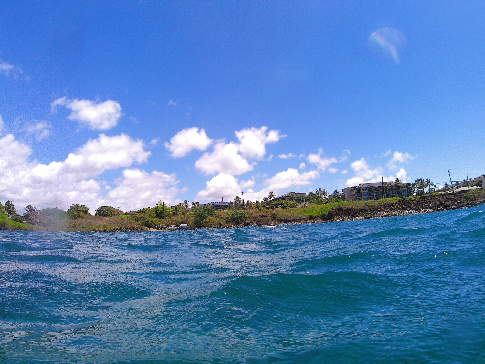
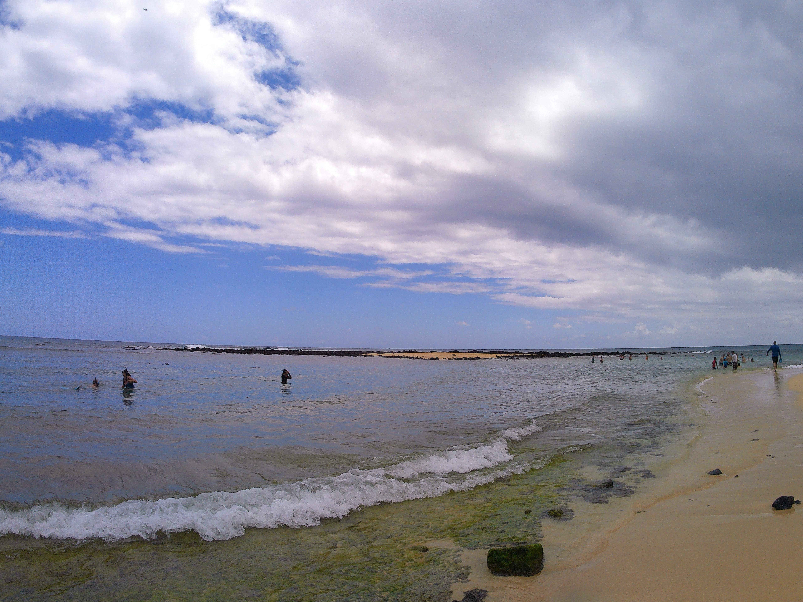
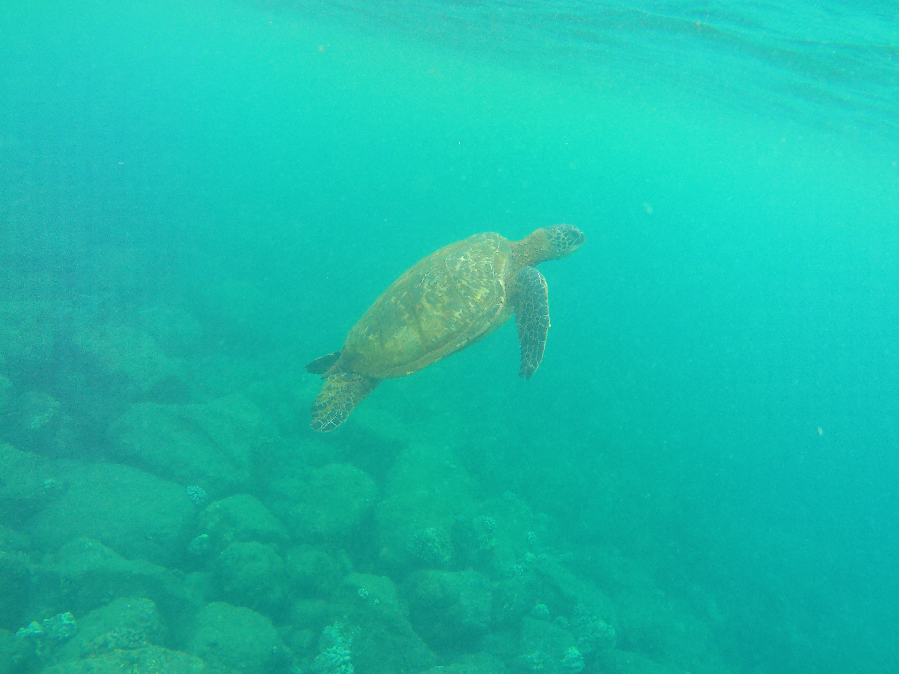
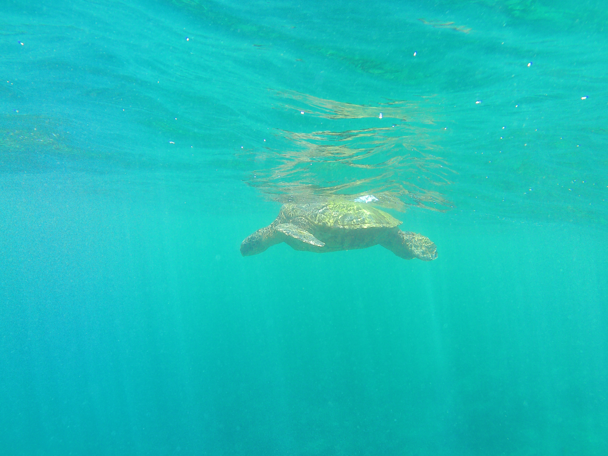
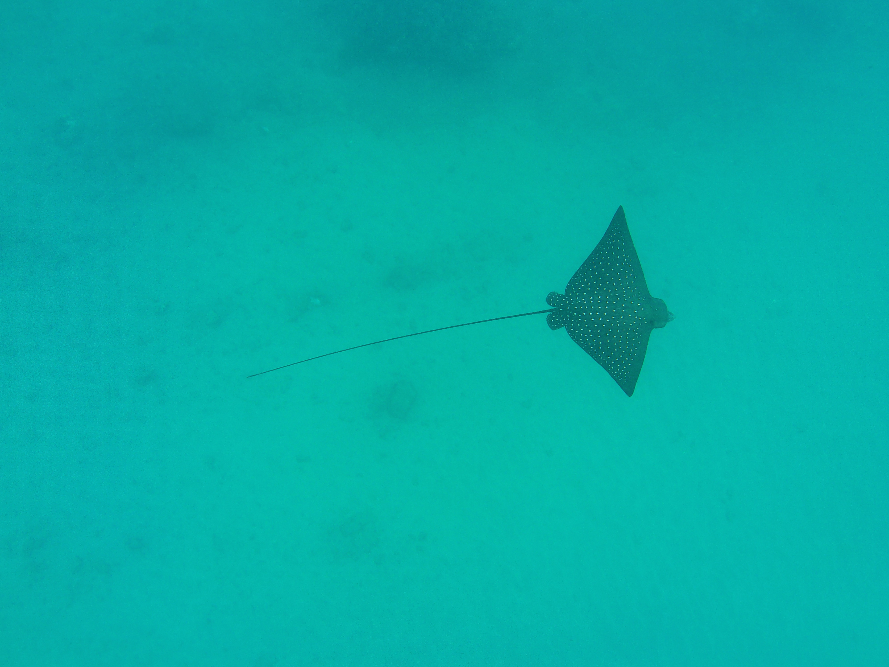
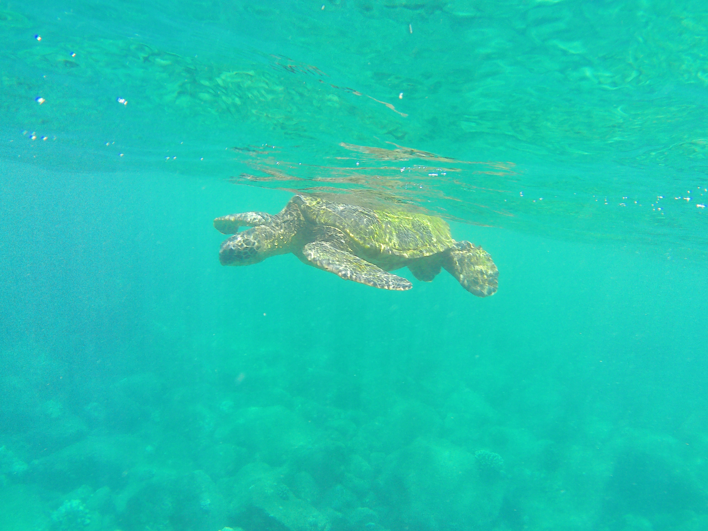
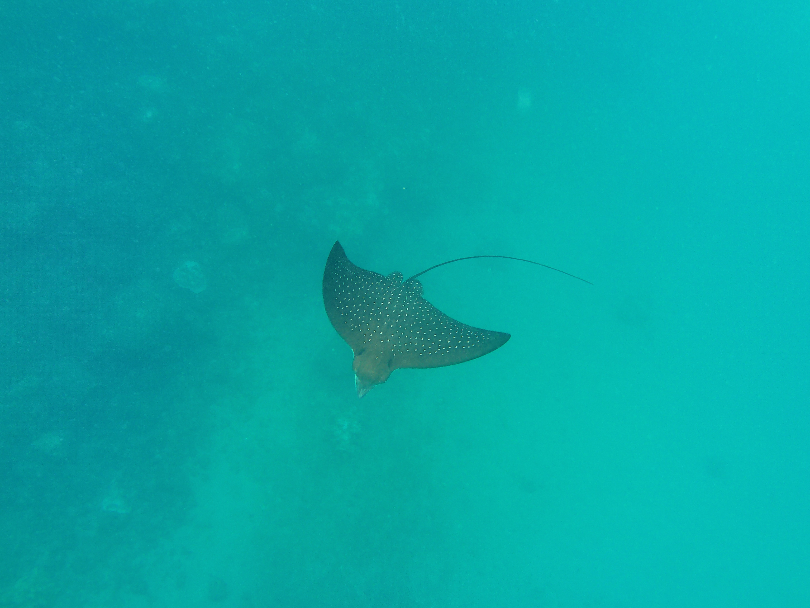
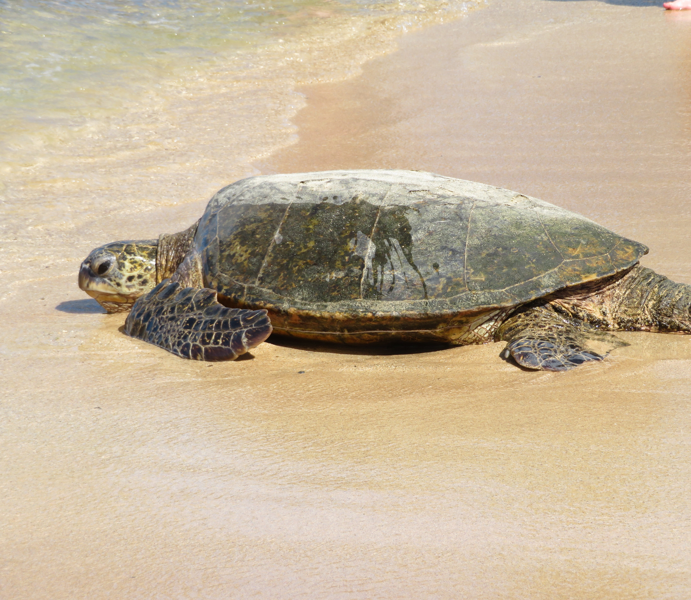
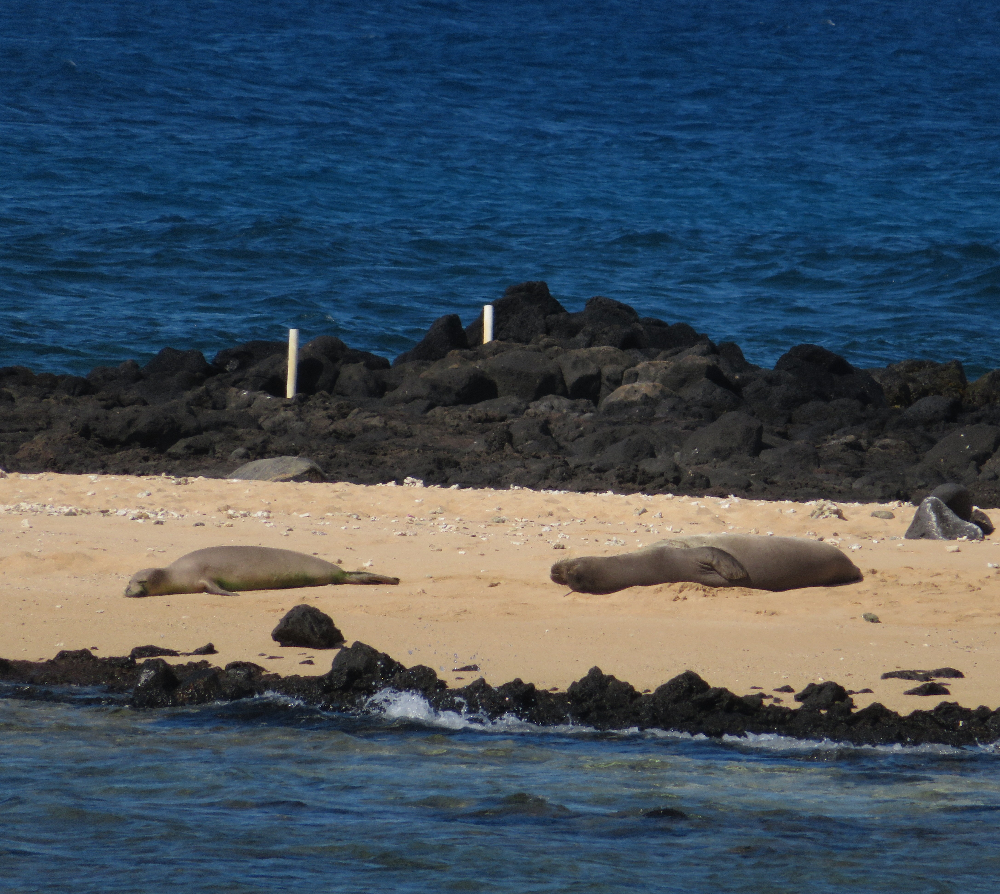

While not as much as Maui, The reefs and beaches of Kauai are still very biodiverse, with tons of cool things to see and marine wildlife to find.
Places such as Koloa Landing (left), Poipu Beach (center, right), and Lawai Beach are some of my favorite snorkeling spots on Kauai, featuring a really cool array of marine life and coral reefs that I was really impressed with.



Such marine life included tons of Sea turtles (top left, top center, bottom left, bottom center), by far my favorite marine animal to swim with and one of the coolest creatures found on this planet, as well as a strikingly beautiful Eagle Ray, both found at Koloa Landing Bay, making it one of my favorite places on the entire island.






In Kauai, there are tons of marine life on the beaches themselves. This included the famous daily turtle arrival (top left) on Poipu beach in the evening, which make their way back to sea at dawn (top center, top right). Besides turtles, Poipu beach is the common spot to see rare Hawaiian Monk Seals (bottom row), which were resting on the beach and on the nearby island.





